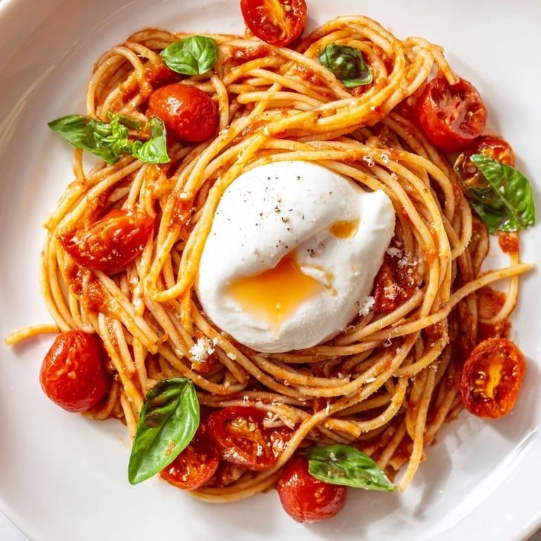

My Recipe
Miso Tomato Burrata Pasta
This miso tomato burrata pasta is a simple pasta dish made with
cherry tomatoes, shallot, garlic, and miso paste. The tomatoes
create a rich and savory sauce while the burrata adds a creamy
finish. This recipe serves one person.
Recipe Details
- Servings: 1
- Prep Time: approximately 10 minutes
- Cook Time: approximately 20 minutes
- Total Time: approximately 30 minutes
Dietary Information
This recipe contains dairy from the burrata. Check the pasta
and miso labels for any additional dietary or allergen information.
Ingredients
- 1 shallot
- 3 cloves garlic
- 1 box cherry tomatoes
- 1 ball burrata
- Spaghettini, or pasta shape of choice
- Miso paste
- Salt
- Black pepper
- Garlic powder
- Chilli flakes
- Rosemary
Equipment
- Large pot
- Frying pan or skillet
- Cutting board
- Knife
- Wooden spoon or spatula
- Colander or pasta strainer
Instructions
-
Bring a pot of salted water to boil and cook the pasta
according to the package instructions.
-
While the pasta cooks, finely chop the shallot and garlic
and cut the cherry tomatoes in half.
-
Add the shallot and garlic to a pan and cook until softened
and fragrant.
-
Cook the tomatoes until they soften and begin to break down
into a sauce.
-
Stir in the miso paste and a small amount of pasta water.
Mix until the miso is incorporated into the tomato sauce.
-
Add the cooked pasta to the pan and toss until the pasta is
completely coated in the sauce. Add more pasta water if needed.
-
Transfer the pasta to a bowl and place the burrata on top.
Finish with additional black pepper, chili flakes, or rosemary
if desired.
Serving and Storage
Serve the pasta with the burrata placed on top and finish
with black pepper, chili flakes, or rosemary if desired.
Source:
TikTok recipe by @j8c1yn

Peer Evaluation
View my research evaluation